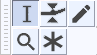

Tools Toolbar
| The Time Shift Tool from previous versions has been replaced by Clip handles. |
- 
The image above shows the Tools Toolbar with the Selection Tool selected.
- Click on this link to learn more about the Tools Toolbar.
- Click on other tools in the image to learn more about those tools.
Previous / Next Shortcuts A Extra D Extra
- A Extra This shortcut cycles backwards selecting each tool in turn, returning to the Multi tool after the Selection tool
- D Extra This shortcut cycles forwards also selecting each tool in turn.
| Note carefully that these two shortcuts will only be available if you select the Full set of shortcuts in Keyboard Preferences. They are not available in the default Standard set of shortcuts. |
 Selection F1
Selection F1
Click to select a start point for audio playback, or click and drag to select a range of audio to play or edit. You can also create a selection region between two points by clicking at one point, then holding down Shift while left-clicking at the other point.
| Selection Tool will always be selected upon reopening Audacity, irrespective of which of the separate tools was selected when you quit. |
 Envelope F2
Envelope F2
Allows smooth volume changes to be made over the length of a track by means of embedded volume "control points". Click in the track to create a control point, then set the volume of that point by dragging one of its four vertically arranged "handles". When you create other control points at different levels, a smooth curve is interpolated between them. Dragging either the top or bottom handle ensures you can never distort the track by dragging outside its original volume envelope. Dragging an inner handle allows you to amplify a quiet piece of audio beyond the original volume envelope of the track.
 Draw Samples F3
Draw Samples F3
Draw Tool enables you to manually redraw the waveform; it can thus be used to make volume changes to individual samples or to effect repairs to clicks/noise.
 Multi-Tool F6
Multi-Tool F6
Combines all the other tools in one. One tool is available at a time, according to the mouse position and modifier key chosen. The shape of the pointer changes to show which tool is active. If you exit Audacity with Multi-Tool Mode selected, it will be also be enabled next time you launch Audacity. More details on Multi-Tool Mode here.